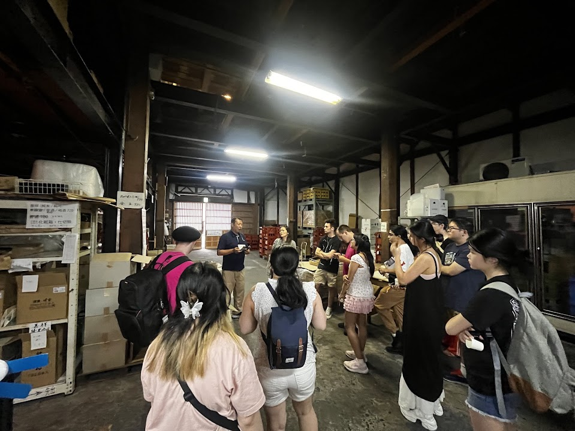
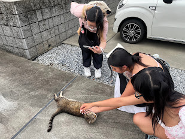
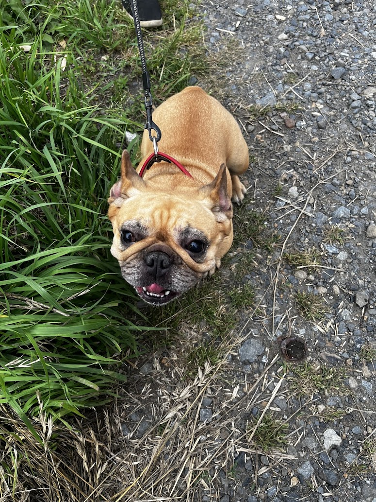
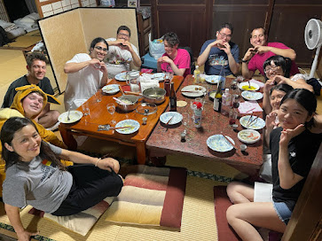
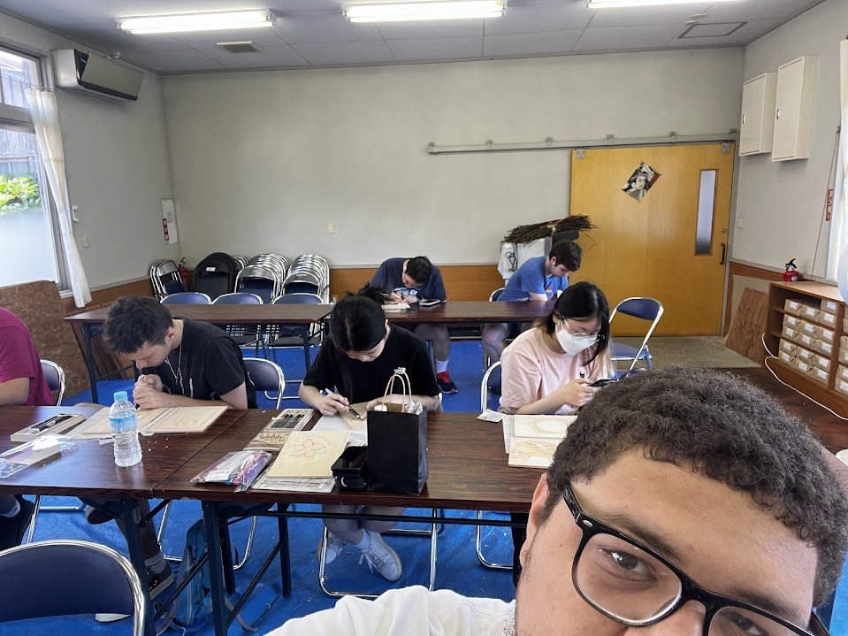
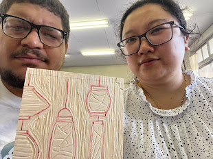
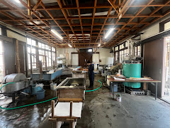
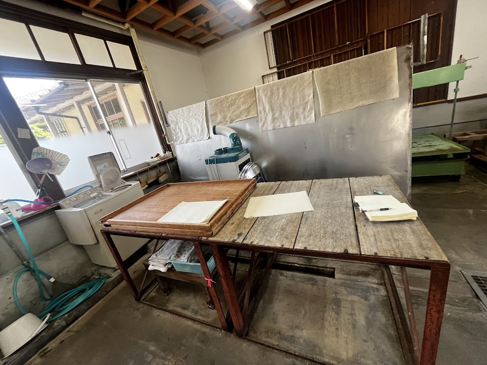
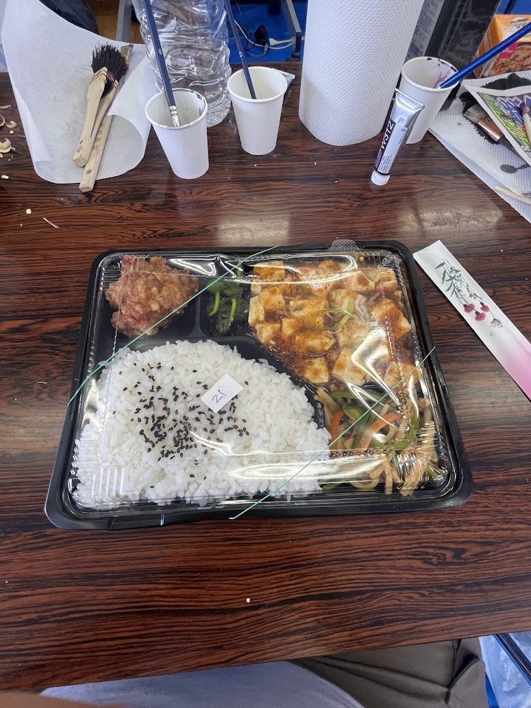

Day 8 – Ogawa, Saitama
On our third day of the Mokuhanga workshop, we continued carving our woodblocks with great care, refining the shapes, background details, and designs of our prints. Much of the day was spent repeating the slow and delicate work of carving, but it was rewarding to see our progress.
In addition to carving, we also returned to our handmade paper from the day before. Now partially dried, the paper had to be carefully peeled, layer by layer, and placed onto heated pads to finish drying. This process took a few hours, but once complete, we were able to keep the paper we had made souvenirs of a hands-on cultural experience that we could take home and use however we liked.Today also featured our first demonstration of using ink to begin the printing process on our handmade paper. Although it was just the beginning, it was exciting to see how all the previous days of preparation would come together.
As with the previous evenings, we went to the supermarket again to get ingredients for dinner. But this day came with a surprise: a spontaneous visit to a sake facility. There, we were given a brief tour and an introduction to how sake is produced, along with a bit of its history. It was an unexpected but fascinating addition to the day.To close out another fulfilling day of learning and artmaking, we enjoyed a full dinner with our professors. The meal included yakitori skewers, miso eggplant rolls, and pesto pasta. It felt like a true family gathering. Sitting down to eat together and reflect on the day’s activities brought everyone closer and reminded me how sharing a meal is one of the best ways to build community.




